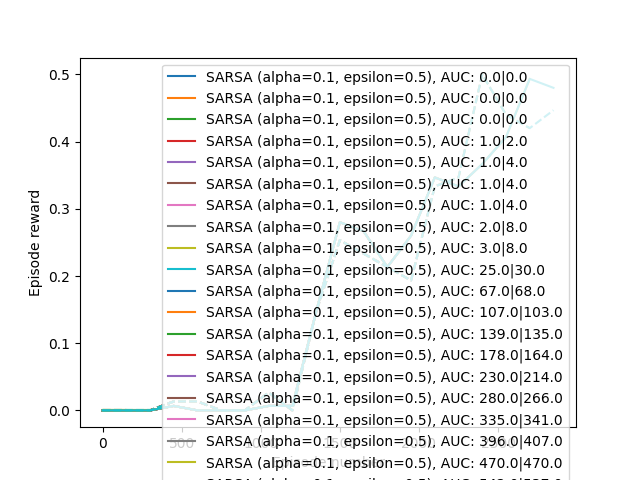
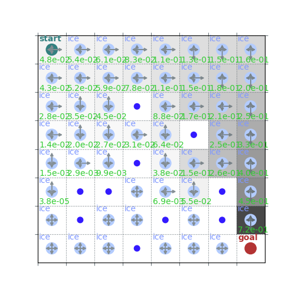
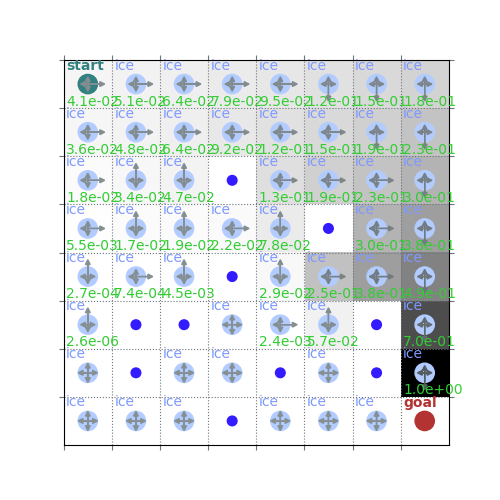
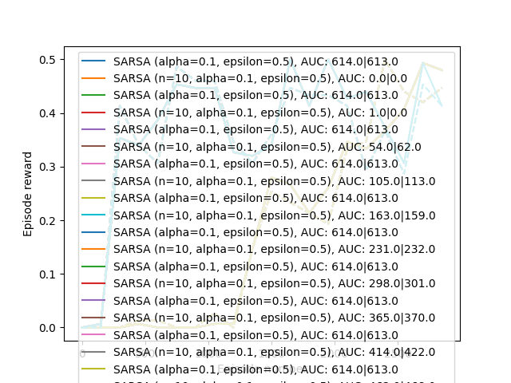
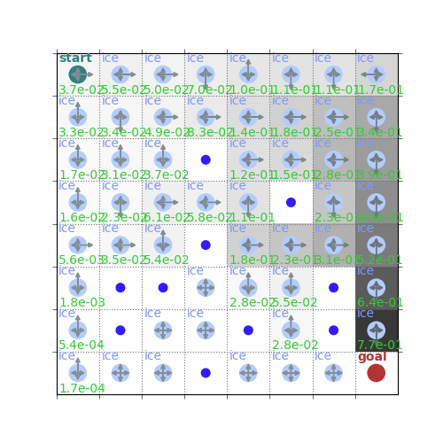
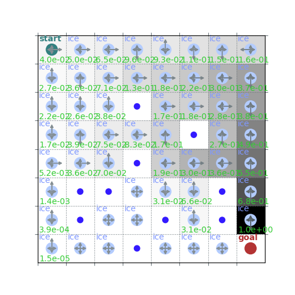

Note
Go to the end to download the full example code.
Practical 6: Temporal Difference Learning
# # Practical 6: Temporal Difference Learning
# ## Setup
import numpy as np
import matplotlib.pyplot as plt
import itertools
from IPython import display
import rldurham as rld
from rldurham import plot_frozenlake as plot
name = 'FrozenLake-v1'
env = rld.make(name, is_slippery=False) # 4x4
env = rld.make(name, map_name="8x8", is_slippery=False) # 8x8
# env = rld.make(name, desc=["SFHH",
# "HFFH",
# "HHFF",
# "HHHG",], is_slippery=False) # custom
rld.seed_everything(42, env)
# LEFT, DOWN, RIGHT, UP = 0, 1, 2, 3
# You can use this helper class to define epsilon-greed policies based on $Q$-values
(42, 0, {'prob': 1})
class QPolicy:
def __init__(self, Q, epsilon):
self.Q = Q
self.epsilon = epsilon
def sample(self, state):
return np.random.choice(np.arange(self.Q.shape[1]), p=self[state])
if np.random.rand() > self.epsilon:
best_actions = np.argwhere(self.Q[state]==np.max(self.Q[state])).flatten()
return np.random.choice(best_actions)
else:
return env.action_space.sample()
def __getitem__(self, state):
Qs = self.Q[state]
p = np.zeros_like(Qs)
max_actions = np.argwhere(Qs == Qs.max())
p[max_actions] = 1 / len(max_actions)
return (1 - self.epsilon) * p + self.epsilon / len(p)
# We can keep some plotting data in these variables (re-evaluate the cell to clear data)
reward_list = [[]]
auc = [0]
test_reward_list = [[]]
test_auc = [0]
plot_data = [[]]
plot_labels = []
experiment_id = 0
# and use these functions to update and plot the learning progress
# (using global variables in functions)
def update_plot(mod):
reward_list[experiment_id].append(reward_sum)
auc[experiment_id] += reward_sum
test_reward_list[experiment_id].append(test_reward_sum)
test_auc[experiment_id] += test_reward_sum
if episode % mod == 0:
plot_data[experiment_id].append([episode,
np.array(reward_list[experiment_id]).mean(),
np.array(test_reward_list[experiment_id]).mean()])
reward_list[experiment_id] = []
test_reward_list[experiment_id] = []
for i in range(len(plot_data)):
lines = plt.plot([x[0] for x in plot_data[i]],
[x[1] for x in plot_data[i]], '-',
label=f"{plot_labels[i]}, AUC: {auc[i]}|{test_auc[i]}")
color = lines[0].get_color()
plt.plot([x[0] for x in plot_data[i]],
[x[2] for x in plot_data[i]], '--', color=color)
plt.xlabel('Episode number')
plt.ylabel('Episode reward')
plt.legend()
display.clear_output(wait=True)
plt.show()
def next_experiment():
reward_list.append([])
auc.append(0)
test_reward_list.append([])
test_auc.append(0)
plot_data.append([])
return experiment_id + 1
# ## On-policy (SARSA) and off-policy (Q-Learning) with TD(0)
# parameters
num_episodes = 3000
alpha = 0.1
gamma = 0.9
epsilon = 0.5
on_policy = True # SARSA or Q-Learning
# value initialisation
Q = np.random.uniform(0, 1e-5, [env.observation_space.n, env.action_space.n]) # noisy
Q = np.zeros([env.observation_space.n, env.action_space.n]) # neutral
V = np.zeros([env.observation_space.n])
if on_policy:
# policies for SARSA
# vvvvvvvvvvvvvvvvvv
sample_policy = QPolicy(Q, epsilon)
learned_policy = sample_policy
plot_labels.append(f"SARSA (alpha={alpha}, epsilon={epsilon})")
# ^^^^^^^^^^^^^^^^^^
else:
# policies for Q-Learning
# vvvvvvvvvvvvvvvvvvvvvvv
sample_policy = QPolicy(Q, epsilon)
td_epsilon = 0.01
learned_policy = QPolicy(Q, td_epsilon)
plot_labels.append(f"Q-Learning (alpha={alpha}, epsilon={epsilon}|{td_epsilon})")
# ^^^^^^^^^^^^^^^^^^^^^^^
for episode in range(num_episodes):
state, _ = env.reset()
reward_sum = 0
# learning a policy
for t in itertools.count():
action = sample_policy.sample(state)
next_state, reward, term, trun, _ = env.step(action)
done = term or trun
next_action = learned_policy.sample(next_state)
# TD(0) targets
# vvvvvvvvvvvvv
v_target = reward + gamma * V[next_state]
q_target = reward + gamma * Q[next_state, next_action]
# ^^^^^^^^^^^^^
# expected TD(0) target
# vvvvvvvvvvvvv
expected_Q = (learned_policy[next_state] * Q[next_state]).sum()
q_target = reward + gamma * expected_Q
# ^^^^^^^^^^^^^
# updates
# vvvvvvvvvvvvv
s, a = state, action
V[s] += alpha * (v_target - V[s])
Q[s, a] += alpha * (q_target - Q[s, a])
# ^^^^^^^^^^^^^
reward_sum += reward
if done:
break
state = next_state
# testing the learned policy
state, _ = env.reset()
test_reward_sum = 0
while True:
action = learned_policy.sample(state)
next_state, reward, term, trun, _ = env.step(action)
done = term or trun
test_reward_sum += reward
state = next_state
if done:
break
update_plot(int(np.ceil(num_episodes / 20)))
experiment_id = next_experiment()
print("Sampling policy and values")
plot(env, v=V, policy=sample_policy, draw_vals=True)
print("Learned policy and optimal/max values")
plot(env, v=Q.max(axis=1), policy=learned_policy, draw_vals=True)
# ## Multi-Step Targets with TD(n)
- 
- 
- 
Sampling policy and values
Learned policy and optimal/max values
# parameters
num_episodes = 3000
alpha = 0.1
gamma = 0.9
epsilon = 0.5
on_policy = True # SARSA or Q-Learning
n = 10 # length of trace to use
# value initialisation
Q = np.random.uniform(0, 1e-5, [env.observation_space.n, env.action_space.n]) # noisy
Q = np.zeros([env.observation_space.n, env.action_space.n]) # neutral
V = np.zeros([env.observation_space.n])
if on_policy:
# policies for SARSA
# vvvvvvvvvvvvvvvvvv
sample_policy = QPolicy(Q, epsilon)
learned_policy = sample_policy
plot_labels.append(f"SARSA (n={n}, alpha={alpha}, epsilon={epsilon})")
# ^^^^^^^^^^^^^^^^^^
else:
# policies for Q-Learning
# vvvvvvvvvvvvvvvvvvvvvvv
sample_policy = QPolicy(Q, epsilon)
td_epsilon = 0.01
learned_policy = QPolicy(Q, td_epsilon)
plot_labels.append(f"Q-Learning (n={n}, alpha={alpha}, epsilon={epsilon}|{td_epsilon})")
# ^^^^^^^^^^^^^^^^^^^^^^^
for episode in range(num_episodes):
state, _ = env.reset()
reward_sum = 0
done_n = 0
# trace of the last n + 1 transitions (state, action, reward, next_action)
trace = np.zeros((n + 1, 4), dtype=int)
# learning a policy
for t in itertools.count():
action = sample_policy.sample(state)
next_state, reward, term, trun, _ = env.step(action)
done = term or trun
next_action = learned_policy.sample(next_state)
# remember transitions (incl. next action sampled by learned policy)
trace[-1] = (state, action, reward, next_action)
# start computing updates if trace is long enough
if t > n:
# n-step targets
# vvvvvvvvvvvvvv
n_step_return = sum(gamma ** i * r for i, (_, _, r, _) in enumerate(trace))
v_target = n_step_return + gamma ** (n + 1) * V[next_state]
q_target = n_step_return + gamma ** (n + 1) * Q[next_state, next_action]
# ^^^^^^^^^^^^^^
# importance sampling factor for TD(n) Q-Learning
if on_policy:
rho = 1
else:
# vvvvvvvvvvvvvvvvvvvvvvvvvv
rho = np.prod([learned_policy[s][a] / sample_policy[s][a] for s, a, _, _ in trace])
# ^^^^^^^^^^^^^^^^^^^^^^^^^^
# updates
# vvvvvvv
s, a, _, _ = trace[0]
V[s] += alpha * rho * (v_target - V[s])
Q[s, a] += alpha * rho * (q_target - Q[s, a])
# ^^^^^^^
reward_sum += reward
state = next_state
# roll trace to make space for next transition at the end
trace = np.roll(trace, shift=-1, axis=0)
# fill with dummy transitions so we can learn from end of episode
done_n += done
if done_n > n:
break
# testing the learned policy
state, _ = env.reset()
test_reward_sum = 0
while True:
action = learned_policy.sample(state)
next_state, reward, term, trun, _ = env.step(action)
done = term or trun
test_reward_sum += reward
state = next_state
if done:
break
update_plot(int(np.ceil(num_episodes / 20)))
experiment_id = next_experiment()
print("Sampling policy and values")
plot(env, v=V, policy=sample_policy, draw_vals=True)
print("Learned policy and optimal/max values")
plot(env, v=Q.max(axis=1), policy=learned_policy, draw_vals=True)
- 
- 
- 
Sampling policy and values
Learned policy and optimal/max values
Total running time of the script: (0 minutes 31.244 seconds)